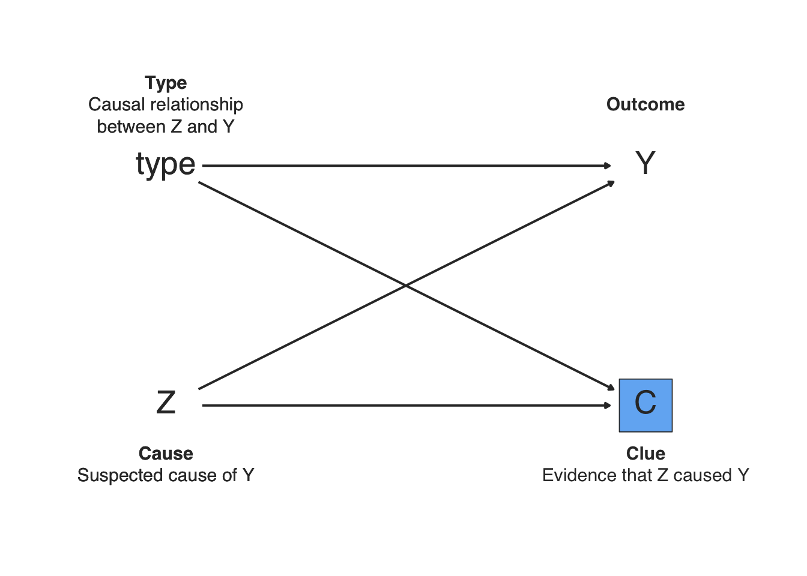
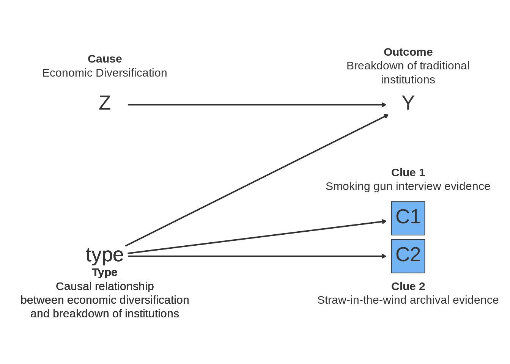

16.6 Bayesian process-tracing
Process-tracing is a qualitative method that uses evidence from in-depth interviews and written records to test causal theories. Process-tracing designs often focus on “causes-of-effects” inquiries (e.g., did the presence of a strong middle class cause a revolution?), rather than on “effects-of-causes” inquiries (e.g., what is the average effect of a strong middle class on the probability of a revolution happening?) Goertz and Mahoney (2012).
Causes-of-effects inquiries imply a hypothesis – “the strong middle class caused the revolution,” say. One widely-promoted answer strategy suggests evaluating whether such hypotheses are correct given the presence or absence of different “clues” found in the archives or interviews [Collier, Brady, and Seawright (2004); Mahoney (2012); Bennett and Checkel (2015); fairfield2013going]. Van Evera (1997) categorizes different kinds of clues according to whether one would only believe the hypothesis if one observed the clue (necessity) and whether observing the clue would suffice to infer the hypothesis was correct (sufficiency).23
Of course, it is rare to have such certainty—we typically attach varying degrees of belief to statements of truth. Bayesian process-tracing uses probability theory to form a posterior belief about a hypothesis, given our beliefs about whether we would observe different pieces of evidence if we are right or wrong~. Extending Van Evera (1997), “hoop tests”" are clues that are nearly certain to be seen if the hypothesis is true, but likely either way, “smoking-guns” are unlikely to be seen in general but are extremely unlikely if a hypothesis is false, “straws-in-the-wind” are more likely when the hypothesis is true but still somewhat likely when it is not, and ``doubly-decisive’’ clues are very likely to be seen if a hypothesis is true and very unlikely if it is false.
16.6.1 Declaration
\(M\) Model: We posit a population of 195 cases, each of which does or does not exhibit the presence of an outcome, \(Y \in \{0,1\}\). For the sake of illustration, we will suppose that \(Y\) represents the presence or absence of a civil war. Each case also exhibits the presence or absence of a potential cause, \(Z \in \{0,1\}\). For example, we might suppose that \(Z\) represents the presence or absence of natural resources. At random, 30% of the cases get \(Z=1\). We also assume researchers observe a clue, \(C\), that is informative for whether \(Z\) does or does not have a causal relationship with \(Y\).
The potential outcomes of \(Y\) depend both on whether the cause, \(Z\), is present in a case and what “type” of causal relation the case exhibits. Conceptually, there are exactly four distinct types of causal relations. First, the presence of \(Z\) might cause \(Y\): if \(Z = 0\), then \(Y = 0\) and if \(Z = 1\) then \(Y = 1\). In other words, civil wars happen in such cases because the country has natural resources. Second, the absence of \(Z\) might cause \(Y\): if \(Z = 0\) then \(Y = 1\) and if \(Z = 1\) then \(Y = 0\). In such cases, civil war breaks out because the country does not have natural resources, and would not break out if the country had natural resources. Finally, \(Y\) might be present irrespective of \(Z\) or \(Y\) might be absent irrespective of \(Z\). Continuing our analogy, such countries would have had civil war or peace, irrespective of whether they also had natural resources (i.e., because war is related to some other causal process). We specify a model in which civil war is governed by causal pathway 1 (\(Z\) causes \(Y\)) in roughly 20% of cases, by pathway 2 (\(\neg Z\) causes \(Y\)) in only 10% of cases, by pathway 3 (\(Y\) irrespective of \(z\)) in 20% of countries, and by pathway 4 (\(\neg Y\) irrespective of \(Z\)) in half of all countries.
There are also potential outcomes for the clue, \(C\). These depend on the case’s causal type. Specifically, the clue appears with .25 probability if the case is one in which \(Z\) causes \(Y\), and with probability .005 if it is one where \(Y\) occurs regardless. The clue does not appear in the other types of cases. Crucially, while the outcome, cause, and clue are observable to the researcher, the type is not.
\(I\) Inquiry: We wish to know the answer to a sample-specific “cause of effects” question: given the specific case we sampled, what is the probability that \(Z\) caused \(Y\)? More formally, we want to know \(\Pr(Y_i(Z_i=0)=0| Z_i=1, Y_i(Z_i=1)=1)\)—that is, what are the chances that \(Y\) would have been 0 if \(Z\) were 0 for a unit \(i\) for which \(Z\) was 1 and \(Y\) was 1. This is equivalent to asking the probability that the case is of type 1. The inquiry thus takes the value 0 or 1 depending on the type of case.
\(D\) Data Strategy: The fundamental problem that the researcher faces is that of observational equivalence: different causal types can cause the same data patterns. The issue is mitigated by following a controversial sampling strategy: selecting on \(Y\). By selecting at random one case in which both \(Z\) and \(Y\) are present, the researcher can narrow her uncertainty to two candidate types: the second and fourth causal types are incapable of producing the data \(Z = 1, Y = 1\). It cannot be that natural resources were the cause of peace (type 2), or that peace would have happened irrespective of natural resources (type 4), in a country that had a civil war and natural resources.
\(A\) Answer Strategy: The researcher uses Bayes’ rule to update about the probability that \(Z\) caused \(Y\) given \(C\).
types <- c('Z_caused_Y', 'Z_caused_not_Y', 'always_Y', 'always_not_Y')
design <-
declare_population(N = 195,
Z = draw_binary(prob = .3, N = N),
type = sample(x = types, size = N,
replace = TRUE, prob = c(.2, .1, .2, .5))) +
declare_potential_outcomes(
Y ~ Z * (type == "Z_caused_Y") + (1 - Z) * (type == "Z_caused_not_Y") + (type == "always_Y"),
conditions = list(Z = c(0, 1), type = types)) +
declare_potential_outcomes(
pr_C_1 ~ Z * (.25 * (type == "Z_caused_Y") + .005 * (type == "always_Y")),
conditions = list(Z = c(0, 1), type = types)) +
declare_reveal(c(Y, pr_C_1), c(Z, type)) +
declare_measurement(C = draw_binary(prob = pr_C_1)) +
declare_sampling(handler = function(data) data %>% filter(Z==1 & Y==1) %>% sample_n(size = 1)) +
declare_estimand(did_Z_cause_Y = type == 'Z_caused_Y') +
declare_estimator(
pr_type_Z_caused_Y = .5,
pr_C_1_type_Z_caused_Y = .25,
pr_C_1_type_always_Y = .005,
pr_C_type_Z_caused_Y = C * pr_C_1_type_Z_caused_Y + (1 - C) * (1 - pr_C_1_type_Z_caused_Y),
pr_C_type_always_Y = C * pr_C_1_type_always_Y + (1 - C) * (1 - pr_C_1_type_always_Y),
posterior =
pr_type_Z_caused_Y * pr_C_type_Z_caused_Y / (pr_type_Z_caused_Y * pr_C_type_Z_caused_Y + pr_C_type_always_Y * (1 - pr_type_Z_caused_Y)),
estimator_label = "Smoking Gun",
estimand_label = "did_Z_cause_Y",
handler = summarize) 16.6.2 Dag

16.6.3 Exercises
Inspect the DAG. How would removing the arrow pointing from type to C affect the inferences a researcher could draw?
Run
draw_data(design).Interpret the value of the
typevariable.Look at the values of Z and Y. Explain which types could produce these values and why.
The variable
pr_C_1_Z_1_type_Z_caused_Yindicates “The potential outcome of the clue probability, given the case is the type in which Z causes Y,” whilepr_C_1_Z_1_type_always_Ygives the corresponding potential outcome for cases whose causal type is one in which Y always happens regardless of Z. Why do these potential outcomes make the clue a smoking gun?Explain why the potential outcome
Y_Z_0_type_always_Ytakes the value 1 whereas the potential outcomeY_Z_0_type_Z_caused_Ytakes the value 0.
Using the code below, diagnose the
designand interpret the diagnosands.
diagnose_design(design,
diagnosands = declare_diagnosands(
bias = mean(posterior - estimand),
rmse = sqrt(mean((posterior - estimand) ^ 2)),
mean_estimand = mean(estimand),
mean_posterior = mean(posterior),
keep_defaults = FALSE),
sims = 1000)Look at the estimator declaration.
What prior beliefs do
pr_C_1_type_Z_caused_Yandpr_C_1_type_always_Yrepresent?How would setting these beliefs to the same value affect the design, and why?
What is the implication for clue selection in Bayesian Process Tracing designs?
Declare a
new_designin which you modify the prior belief that the case belongs to the first causal type by changingpr_type_Z_caused_Yto a different value (say, .7).Diagnose
new_design. How does the bias parameter change, and why?Keeping the modification you just made, modify the code for
new_designfurther so that the clue potential outcomes function ispr_C_1 ~ Z * (.9999 * (type == "Z_caused_Y") + .0001 * (type == "always_Y"and the clue priors arepr_C_1_type_Z_caused_Y = .9999andpr_C_1_type_always_Y = .0001. What kind of clue does the researcher have now?Diagnose
new_design. Why do these changes to the clue reduce bias?
16.6.4 Online Appendix Applied Example
Point here is to explore cases where you look at multiple sources of evidence
In many parts of the world, people rely on non-state institutions to construct social order. Sometimes, those institutions persist for a long time [e.g., mourides], whereas sometimes they break down. Why do non-state institutions fail? Some scholars of African societies think that traditional institutions declined in the 1960s and 1970s due to the forceful efforts of post-independence leaders who saw these alternative authorities as a threat to the young state. Other scholars such as Ensminger (1990) point instead to the internal political economy of rural societies, and emphasize the role of economic interests in the decline of traditional institutions.
Ensminger (1990) is an economic anthropologist who does a bunch of cool work with the Orma in Kenya, a nomadic pastoralist group. She points out that, whereas the Orma were able to avoid a tragedy of the commons by policing access to scarce water resources by competing somali pastoralists throughout the 1960s and 1970s, by the 1980s the power of the council of elders was weakened, as evidenced by frequent defection of individual orma who sold their water to somalis, thus hurting the interests of the group.
Her study presents a case of causal process tracing in which the scholar presents evidence from rich fieldwork to support the inference that some effect was produced by a specific cause. It is useful to formalize as it provides lessons about what kinds of clues qualitative researchers might seek in order to maximize the probative value of their answer strategy.
The key pieces are the outcome (breakdown of council of elders – measured through defections by orma selling their water to somalis), its potential cause (economic diversification – measured as a move away from cattle-based pastoralism towards sendentary economic activity – teaching, shops – by some Orma), and the pieces of evidence or “clues” that support the notion that the relationship between the outcome and the cause is causal.
We set up an imaginary study inspired by Ensminger (1990)
The researcher seeks to test the claim that economic diversification leads to the breakdown of informal institutions. They look for a group in Kenya that has experienced diversification and whose institutions of managing the commons have failed. [think of cool empirical implications]. They want to test this claim against the idea that informal institutions failed due to a deliberate attempt by state authorities to supplant traditional leaders.
Their answer strategy diverges from the one in the book insofar as they seek not one but two clues to test their prior explanation.
This time the researcher needs to think not only about the typology of their clues in terms of Van Evera stuff, but also the joint probability distribution of the clues.
We make use of the
joint_probfunction from the book R package, which calculates the joint probability distribution of two correlated events, given their marginal probabilities and correlationResearcher imposes monotonicity (no
Z_caused_not_Ytypes) – economic diversity either has no or a negative effect on institutionsNote: no variation in outcome. All informal institutions have declined, we just want to know if economic diversification caused it. A quant study would provide no leverage.
Note: joint probabilities of observing clues depend only on type, not (as before) on type and Z
types <- c('Z_caused_Y', 'Z_caused_not_Y', 'always_Y', 'always_not_Y')
design <-
declare_population(N = 20,
Z = draw_binary(prob = .5, N = N),
type = sample(x = types, size = N, replace = TRUE, prob = c(.5, 0, .5, 0))) +
declare_potential_outcomes(
Y ~ Z * (type == "Z_caused_Y") + (1 - Z) * (type == "Z_caused_not_Y") + (type == "always_Y"),
conditions = list(Z = c(0, 1), type = types)) +
declare_potential_outcomes(
pr_C1C2_00 ~ (joint_prob(.75,.3,0,"00") * (type == "Z_caused_Y") + joint_prob(.25,.005,0,"00") * (type == "always_Y")),
conditions = list(Z = c(0, 1), type = types)) +
declare_potential_outcomes(
pr_C1C2_01 ~ (joint_prob(.75,.3,0,"01") * (type == "Z_caused_Y") + joint_prob(.25,.005,0,"01") * (type == "always_Y")),
conditions = list(Z = c(0, 1), type = types)) +
declare_potential_outcomes(
pr_C1C2_10 ~ (joint_prob(.75,.3,0,"10") * (type == "Z_caused_Y") + joint_prob(.25,.005,0,"10") * (type == "always_Y")),
conditions = list(Z = c(0, 1), type = types)) +
declare_potential_outcomes(
pr_C1C2_11 ~ (joint_prob(.75,.3,0,"11") * (type == "Z_caused_Y") + joint_prob(.25,.005,0,"11") * (type == "always_Y")),
conditions = list(Z = c(0, 1), type = types)) +
declare_reveal(c(Y, pr_C1C2_00,pr_C1C2_01,pr_C1C2_10,pr_C1C2_11), c(Z, type)) +
declare_assignment(blocks = ID, block_prob_each = cbind(pr_C1C2_00,pr_C1C2_01,pr_C1C2_10,pr_C1C2_11),
conditions = c("00","01","10","11"),
assignment_variable = "C1C2") +
declare_sampling(handler = function(data) data %>% filter(Z==1 & Y==1) %>% sample_n(size = 1)) +
declare_estimand(did_Z_cause_Y = type == 'Z_caused_Y') +
declare_measurement(
C1 = ifelse(C1C2 == "10" | C1C2 == "11", 1, 0),
C2 = ifelse(C1C2 == "01" | C1C2 == "11", 1, 0),
handler = fabricate) +
declare_estimator(
pr_type_Z_caused_Y = .5,
pr_C_1_type_Z_caused_Y = .75,
pr_C_1_type_always_Y = .25,
C = C1,
pr_C_type_Z_caused_Y = C * pr_C_1_type_Z_caused_Y + (1 - C) * (1 - pr_C_1_type_Z_caused_Y),
pr_C_type_always_Y = C * pr_C_1_type_always_Y + (1 - C) * (1 - pr_C_1_type_always_Y),
posterior =
pr_type_Z_caused_Y * pr_C_type_Z_caused_Y / (pr_type_Z_caused_Y * pr_C_type_Z_caused_Y + pr_C_type_always_Y * (1 - pr_type_Z_caused_Y)),
label = "Straw in the Wind",
estimand_label = "did_Z_cause_Y",
handler = summarize) +
declare_estimator(
pr_type_Z_caused_Y = .5,
pr_C_1_type_Z_caused_Y = .30,
pr_C_1_type_always_Y = .005,
C = C2,
pr_C_type_Z_caused_Y = C * pr_C_1_type_Z_caused_Y + (1 - C) * (1 - pr_C_1_type_Z_caused_Y),
pr_C_type_always_Y = C * pr_C_1_type_always_Y + (1 - C) * (1 - pr_C_1_type_always_Y),
posterior =
pr_type_Z_caused_Y * pr_C_type_Z_caused_Y / (pr_type_Z_caused_Y * pr_C_type_Z_caused_Y + pr_C_type_always_Y * (1 - pr_type_Z_caused_Y)),
label = "Smoking Gun",
estimand_label = "did_Z_cause_Y",
handler = summarize) +
declare_estimator(
pr_type_Z_caused_Y = .5,
pr_C1_1_type_Z_caused_Y = .30,
pr_C1_1_type_always_Y = .005,
pr_C2_1_type_Z_caused_Y = .75,
pr_C2_1_type_always_Y = .25,
rho = 0,
pr_C_type_Z_caused_Y = joint_prob(pr_C1_1_type_Z_caused_Y, pr_C2_1_type_Z_caused_Y,
rho, which_prob = C1C2),
pr_C_type_always_Y = joint_prob(pr_C1_1_type_always_Y, pr_C2_1_type_always_Y,
rho, which_prob = C1C2),
posterior =
pr_type_Z_caused_Y * pr_C_type_Z_caused_Y / (pr_type_Z_caused_Y * pr_C_type_Z_caused_Y + pr_C_type_always_Y * (1 - pr_type_Z_caused_Y)),
label = "Joint Updating",
estimand_label = "did_Z_cause_Y",
handler = summarize)
# diagnose_design(design,
# diagnosands = declare_diagnosands(
# bias = mean(posterior - estimand),
# rmse = sqrt(mean((posterior - estimand) ^ 2)),
# mean_estimand = mean(estimand),
# mean_posterior = mean(posterior),
# keep_defaults = FALSE),
# sims = 500)
# design_sims <- simulate_design(design, sims = 500)16.6.5 Dag
dag <- dagify(C1 ~ type,
C2 ~ type,
Y ~ Z + type)
nodes <-
tibble(
name = c( "type","Z","C1", "C2", "Y"),
label = name,
annotation = c(
"**Type**<br>Causal relationship<br>between economic diversification<br>and breakdown of institutions",
"**Cause**<br>Economic Diversification",
"**Clue 1**<br>Smoking gun interview evidence",
"**Clue 2**<br>Straw-in-the-wind archival evidence",
"**Outcome**<br>Breakdown of traditional<br>institutions"),
x = c(1, 1, 5, 5, 5),
y = c(1.5,3.5,2,1.5,3.5),
nudge_direction = c("S", "N", "N", "S","N"),
answer_strategy = "uncontrolled"
)
ggdd_df <- make_dag_df(dag, nodes, design)
base_dag_plot %+% ggdd_df
References
Bennett, Andrew, and Jeffrey T Checkel. 2015. Process Tracing. New York: Cambridge University Press.
Collier, David, Henry E. Brady, and Jason Seawright. 2004. “Sources of Leverage in Causal Inference: Toward an Alternative View of Methodology.” In Rethinking Social Inquiry: Diverse Tools, Shared Standards, edited by David Collier and Henry E. Brady. Lanham, Maryland: Rowman; Littlefield.
Ensminger, Jean. 1990. “Co-Opting the Elders: The Political Economy of State Incorporation in Africa.” American Anthropologist 92 (3): 662–75. http://www.jstor.org/stable/680341.
Goertz, Gary, and James Mahoney. 2012. A Tale of Two Cultures: Qualitative and Quantitative Research in the Social Sciences. Princeton: Princeton University Press.
Mahoney, James. 2012. “The Logic of Process Tracing Tests in the Social Sciences.” Sociological Methods and Research 41 (4): 570–97.
Van Evera, Stephen. 1997. Guide to Methods for Students of Political Science. Ithaca: Cornell University Press.
“Smoking guns” are well-known: observing them is sufficient to infer the hypothesis is true, but not necessary (as they are quite rare). “Hoop tests,” on the other hand, are pieces of evidence that one would expect to find if the hypothesis is correct (necessary), but do not necessarily prove it (not sufficient). “Straw-in-the-wind” tests are neither necessary nor sufficient, while “doubly-decisive” pieces of evidence are fully informative: you should expect to find them if you are correct and if you do, you have proven your theory.↩︎